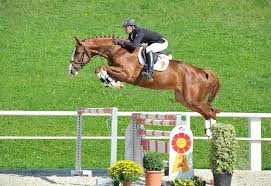
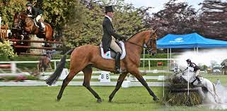
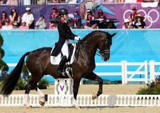

Saltos Variados 
El salto es una disciplina dentro de la equitación que consiste en un acontecimiento sincronizado juzgado en la capacidad del caballo y del jinete de saltar sobre una serie de obstáculos, en un orden dado. Esta disciplina es una de las más populares de los deportes ecuestres y la más usada por los jinetes de hoy en día, además es la más moderna especialidad del deporte ecuestre, que ha venido a convertir al deporte clásico de la equitación en un deporte de espectáculo. Al conjunto de caballo y jinete o amazona también se les denomina «binomio», y en los reglamentos de competiciones de salto el jinete o amazona que compiten aparecen igualmente con la denominación de «atletas» (aludiendo a la etimología del término en griego).
Tabla de Penalizaciones
Existen distintos baremos que penalizan con distinta puntuación cada una de las penalizaciones realizadas, que además son susceptibles de modificación en cada nueva edición del reglamento para concurso de saltos. Este sería un ejemplo:
- Derribo: 4 puntos
- 1ra desobediencia: 4 puntos
- 2da desobediencia: eliminado
- Caida del ginete: eliminado
- Tiempo exedido: 1 punto cada 4 segudos comenzados
- Pisar huella 1ra vez: 4 puntos
- Pisar huella 2da vez: eliminado
- Error de recorrido: eliminado
Concurso completo de Equitacion 
El concurso completo o prueba de los tres días es una combinación de tres disciplinas ecuestres: doma clásica, campo a través y saltos de obstáculo.1 Las competiciones se efectúan en este orden y una en cada día (al principio eran tres días, aunque actualmente y dependiendo del evento, la prueba de doma se realiza en dos días). Esta competición tiene sus raíces como prueba comprensiva de la caballería que requería diferentes tipos de maestría al montar a caballo.
Orden de las Pruebas
- Adiestramiento
- Salto en Campo Exterior
- Salto Variados
Adiestramiento 
Esta disciplina tiene por objetivo el desarrollo del caballo mediante un entrenamiento racional, metódico y equilibrado por medio del cual el jinete consigue que este realice todas sus órdenes con armonía, equilibrio y actividad. El caballo se vuelve tranquilo, elástico, ágil y flexible, a la vez que se hace más confiado y atento a las órdenes del jinete, llegando a formar con él un binomio perfecto